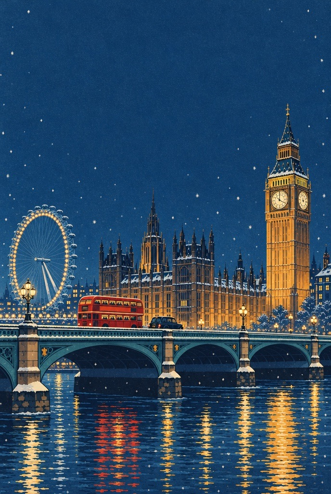

5 · 9 febbraio 2027
Quartieri, itinerario e tutto quello che serve per otto persone.
Questa guida
Una guida in stile Lonely Planet, scritta per un gruppo preciso: cinque adulti e tre ragazze di 16, 13 e 12 anni, in hotel ad Aldgate East, dal 5 al 9 febbraio 2027.
Orari, prezzi e regole sono stati verificati sui siti ufficiali a ottobre 2026 e vanno ricontrollati a gennaio 2027: i prezzi indicati sono quelli del 2026. Quando un'informazione non era confermata da una fonte affidabile, è scritta come da verificare oppure non c'è.
L'itinerario (Parte 2) è l'unica sezione che parla dei nostri giorni e cambierà man mano che arrivano idee e contributi del gruppo. I capitoli dei quartieri restano validi qualunque giorno ci andiamo.
La guida, capitolo per capitolo, e la mappa del viaggio con la metro: felicevitulano.github.io/londra-2027. La versione online è sempre la più aggiornata.
Foto da Wikimedia Commons, con licenze Creative Commons o in pubblico dominio: autori e licenze in fondo a ogni capitolo. Mappe: Esri, HERE, Garmin e i contributori di OpenStreetMap. Linee della metro: OpenStreetMap. Illustrazione di copertina generata con Higgsfield. Spunti dai video TikTok raccolti da Miriam. Testi e impaginazione: ottobre 2026.
Sommario
Come usare la guida
La linea della metro. Sul bordo di ogni pagina corre una linea del colore del capitolo, come una linea della Underground. Le fermate sono le sezioni del capitolo: quella accesa dice dove sei (apertura, mappa, orientarsi, top sight, da vedere, passeggiate, mangiare).
I numeri. Ogni luogo ha un numero, uguale sulla mappa del quartiere e nella sua scheda.
In verde: orari, prezzi, come arrivare. In senape: "Il trucco" e i consigli pratici. In sabbia: "Lo sapevi?", storie e curiosità. £ · ££ · £££: meno di £12, £15-30, oltre £40 a testa.
Quando è utile, sotto i prezzi c'è il totale per il nostro gruppo. Attenzione alle fasce d'età: in molti posti la ragazza di 16 anni paga già da adulta.